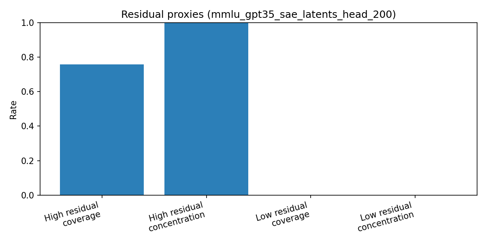
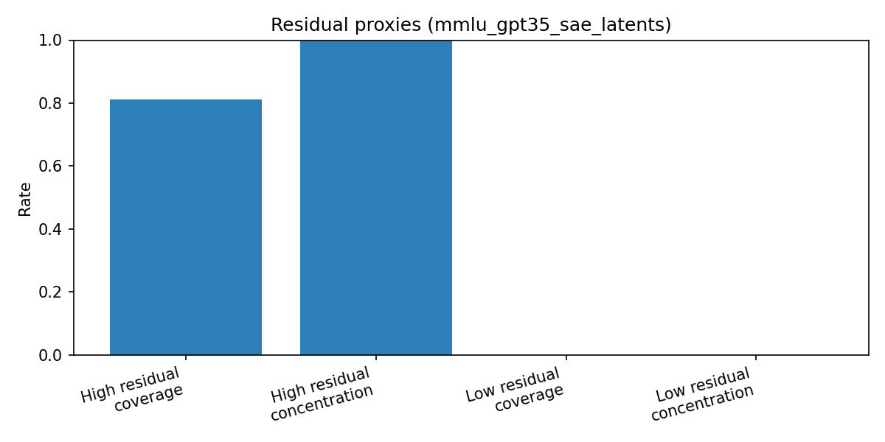
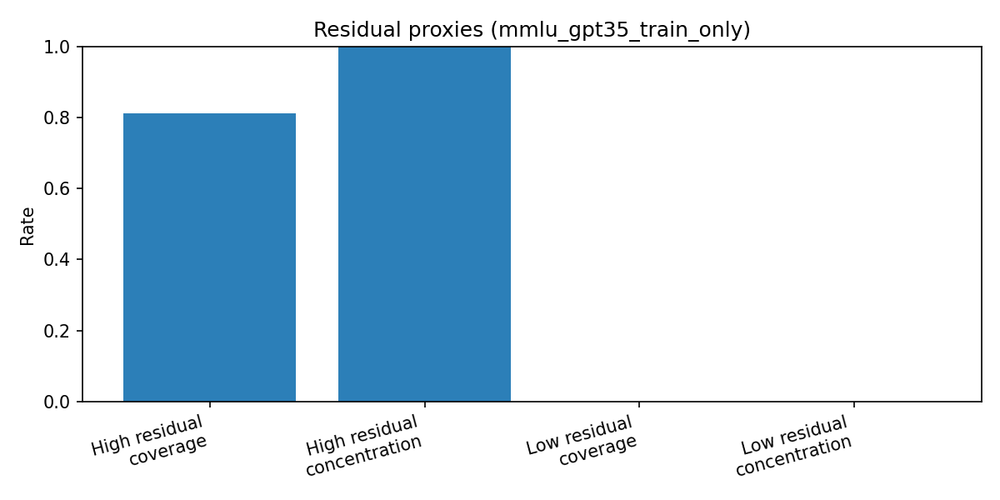
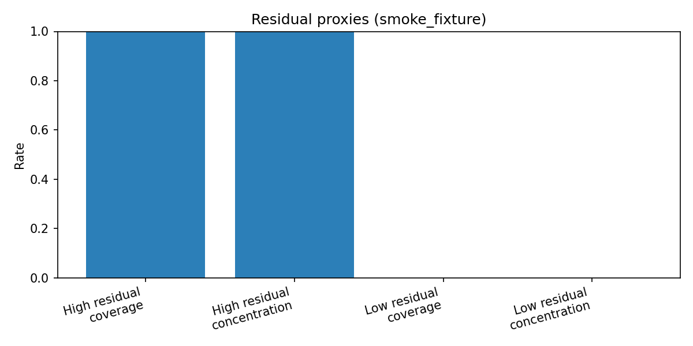

Audit generated 2026-04-07 21:58:28 UTC
Artifacts are ordered by last-modified timestamp (newest first), then filename.
s05 focus: set-level scoring and leaderboard views.
*_metrics.json for per-set metrics and aggregated quality checks.leaderboard.csv and residual bar plots for quick model/set comparisons.stage2/s05_eval/resultsmmlu_gpt35_sae_latents_head_200_residual_bar.png43319 bytes · modified 2026-04-07 20:59:48 UTC

leaderboard.csv614 bytes · modified 2026-04-07 20:59:47 UTC
| label | n_instances | n_errors | high_coverage | high_concentration | coverage | concentration | predictive_utility_auc | predictive_utility_f1 | redundancy_avg_jaccard | stability_overlap_at_k |
|---|---|---|---|---|---|---|---|---|---|---|
| smoke_fixture | 6 | 3 | 1.0 | 1.0 | ||||||
| smoke_fixture | 6 | 3 | 1.0 | 1.0 | ||||||
| mmlu_gpt35_sae_latents | 7851 | 2418 | 0.8122415219189413 | 1.0 | ||||||
| mmlu_gpt35_train_only | 7851 | 2418 | 0.8122415219189413 | 1.0 | ||||||
| mmlu_gpt35_train_only | 7851 | 2418 | 0.8122415219189413 | 1.0 | ||||||
| mmlu_gpt35_train_only | 7851 | 2418 | 0.8122415219189413 | 1.0 | ||||||
| mmlu_gpt35_sae_latents_head_200 | 200 | 95 | 0.7578947368421053 | 1.0 | 1.0 | 0.475 | 0.5870535714285714 | 0.5283018867924528 | 0.23515450139777153 |
mmlu_gpt35_sae_latents_head_200_metrics.json1421 bytes · modified 2026-04-07 20:59:47 UTC
{
"label": "mmlu_gpt35_sae_latents_head_200",
"residual_metrics": {
"n_instances": 200,
"n_errors": 95,
"error_rate": 0.475,
"high_residual": {
"n": 72,
"coverage_of_errors": 0.7578947368421053,
"concentration_in_group": 1.0
},
"low_residual": {
"n": 63,
"coverage_of_errors": 0.0,
"concentration_in_group": 0.0
}
},
"set_level_metrics": {
"coverage_concentration": {
"n_errors": 95,
"n_covered_instances": 200,
"n_covered_errors": 95,
"coverage": 1.0,
"concentration": 0.475
},
"predictive_utility": {
"split_seed": 42,
"n_features": 334,
"auc": 0.5870535714285714,
"f1": 0.5283018867924528
},
"redundancy": {
"n_patterns": 334,
"avg_pairwise_jaccard": 0.23515450139777153,
"max_pairwise_jaccard": 1.0
},
"stability": {
"top_k": 25,
"pairs_evaluated": 0,
"overlap_at_k_mean": null
},
"n_patterns": 334,
"pattern_membership_source": "/uufs/chpc.utah.edu/common/home/u1590903/llm_finetune_demo/interpretability/teaching-llms-errors/pipeline_2026/stage2/s04_diff/results/mmlu_hf_latents.pattern_membership.csv",
"pattern_catalog_source": "/uufs/chpc.utah.edu/common/home/u1590903/llm_finetune_demo/interpretability/teaching-llms-errors/pipeline_2026/stage2/s04_diff/results/mmlu_hf_latents.pattern_catalog.json"
}
}
.gitkeep0 bytes · modified 2026-04-07 19:51:50 UTC
No inline preview for this file type.
mmlu_gpt35_sae_latents_metrics.json398 bytes · modified 2026-04-07 19:51:50 UTC
{
"label": "mmlu_gpt35_sae_latents",
"residual_metrics": {
"n_instances": 7851,
"n_errors": 2418,
"error_rate": 0.3079862437905999,
"high_residual": {
"n": 1964,
"coverage_of_errors": 0.8122415219189413,
"concentration_in_group": 1.0
},
"low_residual": {
"n": 2093,
"coverage_of_errors": 0.0,
"concentration_in_group": 0.0
}
}
}
mmlu_gpt35_sae_latents_residual_bar.png35403 bytes · modified 2026-04-07 19:51:50 UTC

mmlu_gpt35_train_only_metrics.json397 bytes · modified 2026-04-07 19:51:50 UTC
{
"label": "mmlu_gpt35_train_only",
"residual_metrics": {
"n_instances": 7851,
"n_errors": 2418,
"error_rate": 0.3079862437905999,
"high_residual": {
"n": 1964,
"coverage_of_errors": 0.8122415219189413,
"concentration_in_group": 1.0
},
"low_residual": {
"n": 2093,
"coverage_of_errors": 0.0,
"concentration_in_group": 0.0
}
}
}
mmlu_gpt35_train_only_residual_bar.png34810 bytes · modified 2026-04-07 19:51:50 UTC

smoke_metrics.json347 bytes · modified 2026-04-07 19:51:50 UTC
{
"label": "smoke_fixture",
"residual_metrics": {
"n_instances": 6,
"n_errors": 3,
"error_rate": 0.5,
"high_residual": {
"n": 3,
"coverage_of_errors": 1.0,
"concentration_in_group": 1.0
},
"low_residual": {
"n": 2,
"coverage_of_errors": 0.0,
"concentration_in_group": 0.0
}
}
}
smoke_residual_bar.png33594 bytes · modified 2026-04-07 19:51:50 UTC
